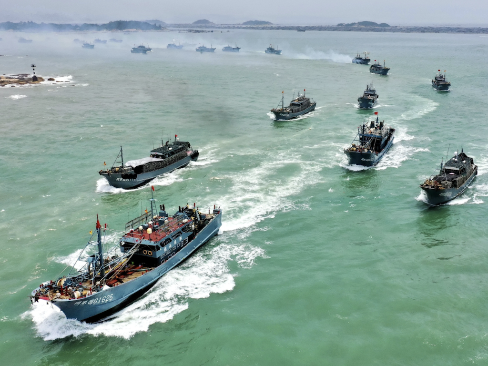

Homepage | Geography & Landforms | Climate & Endemic Organisms | Language & Economy | 3 Special Things To See Or Do In Isla Isabela | Photos Of Isla Isabela | References | Feedback
The island is multilingual due to its popular tourism. However, its official language is Spanish due to its close proximity with Spanish speaking countries. The people there also speak languages that incorporate English, German, and French. Consequently, the circumstances are adequately auspicious to sustain life for most of us there. Nearly all of us would have no issue with interactions and communications.
Many of the islands haven’t been utterly explored by humans. Predominantly, tourism, fishing, and agriculture are the main sources of income for the indigenous inhabitants. The inhabitants have been utilizing the U.S. dollar for their expenses. Therefore, the official currency is the U.S. dollar, which has been used since the year 2000.
